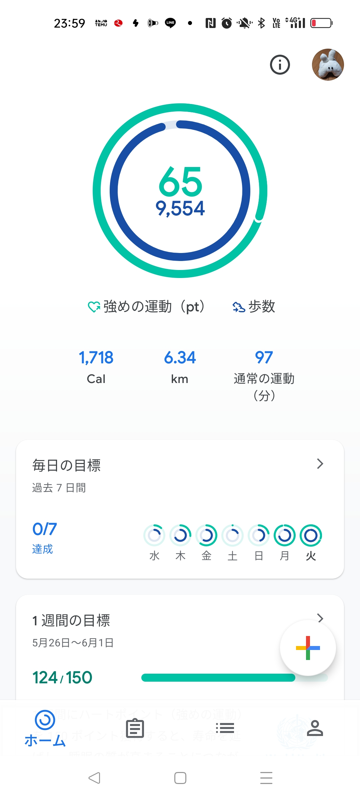
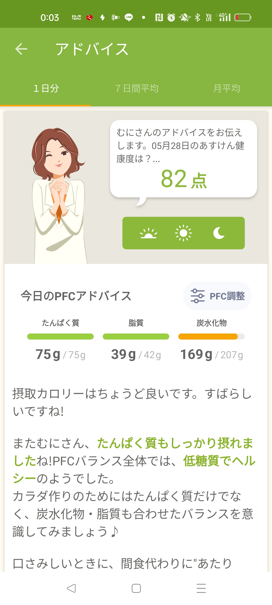

2024/05/28☔
ぴっちぴっちちゃっぷちゃっぷ
朝、目覚めて雨降ってなかったのに、陸事にいて尚且つ軽自動車協会へ歩いて向かってるときにわんさか降ってきたよ雨…(笑)
見事にずぶ濡れでしたが、乾きやすい生地に感謝です😊
今日は、21：00過ぎは就寝したのに眠り足りない感じ😪💦
きっと、ミサイルのアラートのせいだ！！
いや、絶対そうだ！！！
私、コーヒーは好きなのですが、飲むと夜の睡眠に影響が出るので、滅多に摂取しないもしくはスキムミルク多めに入れて飲んだりするのですが、
今日の午後から欠伸が止まらない、止まらない💦
こんな時間から飲んだらミルクINでもアウトだな～と思いながらも、仕事にならないので飲んじゃいました（てへっ
さっそく、今日の結果報告です✨✨
 
ウォーキングめっちゃ頑張りました✨️
今週日曜日から、KIDSたちと体力づくりのために縄跳びをしているのですが、自分の体重と重力に負けて、ヒラメ筋めっちゃ痛んでてウォーキングやばかったです（笑）
ペース考えながらも有酸素運動と無酸素の筋トレの配分考えます！
スリムむに目指すぞ～✨️